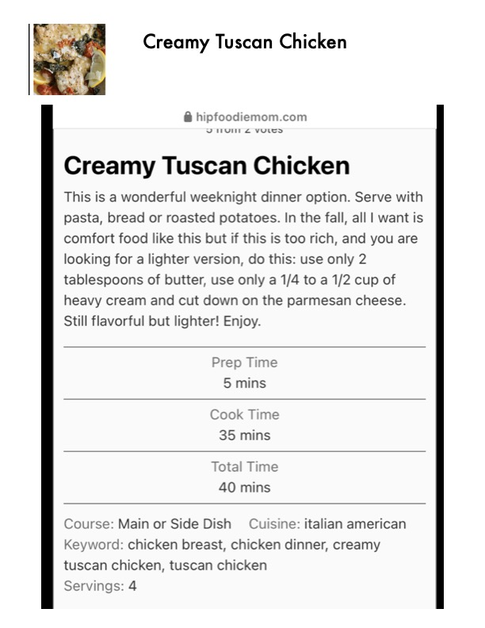

Creamy Tuscan Chicken

Original cookbook page 624
Ingredients
- 5 mins
- 35 mins
- 40 mins
Instructions
- Serve with pasta, bread or roasted potatoes.
- In the fall, all I want is comfort food like this but if this is too rich, and you are looking for a lighter version, do this: use only 2 tablespoons of butter, use only a 1/4 to a 1/2 cup of heavy cream and cut down on the parmesan cheese.
Recipe #624 from collection